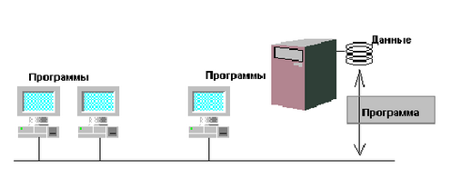

DRKB Explorer
Архитектура «Клиент-cервер»
01.01.2010
Основная идея архитектуры “клиент-сервер”
Логическим развитием архитектуры информационных систем, причем развитием на качественно новом уровне, стала архитектура “клиент-сервер”. Все современные системы управления базами данных, и продукция фирмы Informix Software, в частности, выполнены по архитектуре “клиент-сервер”. Архитектура “клиент-сервер” относится к описанию взаимодействия программ, причем как находящихся на одном компьютере, так и на разных. Данная архитектура получила широкое распространение благодаря широкому внедрению вычислительных сетей. Рассмотрим основные идеи этой архитектуры.
Если мы вернемся к архитектуре информационных систем на основе идеи файл-сервера, то принципиальным недостатком такой архитектуры являлось разнесение программ, обрабатывающих данные, и самих данных. Основным принципиальным недостатком терминальной архитектуры являлось слишком сильное разнесение пользователя и программы обработки. Архитектура “клиент-сервер” устраняет эти недостатки.
Архитектура “клиент-сервер” подразумевает наличие двух типов программ - программы-клиента и программы-сервера. Программа-клиент является “активной” программой, то есть в ее задачи входит генерация некоторых обращений за услугами к программесерверу. Программасервер является пассивной программой, то есть в ее функции входит ожидание запроса от программы-клиента. Когда такой запрос поступает, программа-сервер отрабатывает его и, при необходимости, возвращает программе-клиенту некоторые результаты.
Рис. 1.3. Многопользовательская информационная система на основе архитектуры “клиентсервер”.
Естественно, взаимодействие между программой-клиентом и программой-сервером должно происходить по четко определенному интерфейсу. В противном случае, они рискуют не понять друг друга.
Рассмотрим два примера программ, основанных на архитектуре клиент-сервер. Первый из них посвящен графической оболочке для Unixсистем. Второй пример касается непосредственно систем управления базами данных.
Пример реализации: X Window System 11
Система X Window System 11 (иногда ее называют просто X Window или X11, а в прораммистском мире прижился термин “иксы”) не относится к системам управления базами данных. Однако это очень хороший и наглядный пример использования архитектуры “клиентсервер” на практике, и понимание принципов построения X Window System 11 очень помогает понять принципы архитектуры “клиентсервер”.
Система X Window состоит из двух программ - прикладной программыклиента (например, программы автоматизированного проектирования летательных аппаратов) и программысервера (ее называют X Server, читается “икс-сервер”). Программаклиент реализует в себе логику приложения, например, может по команде конструктора заменить в модели самолета один двигатель на другой. Однако в случае X Window программаклиент не занимается непосредственно ни выводом информации на экран, ни интерфейсом с пользователем. Вся ее интерфейсная часть реализуется с помощью обращений к Xсерверу. Например, программаклиент посылает запросы “нарисуй линию такого-то цвета в таком-то месте”, “открой новое окно” и т.д. Программасервер отрабатывает эти запросы, то есть рисует окно, рисует линию и т.д. Протокол, по которому общаются клиент и сервер в X Window System 11 стандартизован, то есть Xсервер понимает отправленные к нему запросы вне зависимости от того, стоит он на той же машине, или находится на другогм компьютере с другой системой команд.
В данном случае такая архитектура позволяет запускать такие ресурсоемкие и специализированные программы, как системы автоматизированного проектирования на очень мощных и дорогих компьютерах, а пользователей таких программ оснащать недорогими персональными компьютерами, рабочими станциями или вообще специализированными Xтерминалами, представляющими собой аппаратно-программную реализацию Хсерверов. В частности, для IBM PC-совместимых персональных компьютеров существует несколько программ, реализующих Xсервер для популярных операционных систем Windows 3.1/95 и OS/2. Для рабочих станций под управлением ОС Unix (производства IBM, Hewlett-Packard, Sun Microsystems) Xсервер просто входит в комплект постаки.
Интересно отметить, что в случае X Window программасервер находится на компьютере, который принято называть компьютеромклиентом, а программаклиент находится на более мощном компьютере, который обычно называется компьютеромсервером.
Реализация архитектуры “клиент-сервер” для баз данных
Рассмотрим причины, по которым архитектура “клиентсервер” может быть полезна для систем доступа к данным и, в частности, для систем управления базами данных. Для начала, предположим, что имеется некоторая простая программа, автоматизирующая деятельность какого-то предприятия. Эта программа запрашивает у пользователя информацию и помещает ее в файл, либо читает некоторые данные из файла и показывает их пользователю. Когда такая программа пишется в виде единой программы, предназначенной для использования на персональном компьютере, на котором в каждый момент с этими данными работает только один человек проблем почти не возникает. Но представим себе, что компьютер поставили в сеть, и сразу несколько человек захотели поработать с этими данными. Пока все пользователи только смотрят на эти данные, ничего страшного не происходит.
Но как только какой-то пользователь (или сразу несколько пользователей) захочет изменить эти данные, начинаются проблемы. Пока все смотрят на некоторые данные, думая что они правильные, кто-то может их поменять. В результате то, что видит большинство пользователей оказывается не соответствует тому, что есть на самом деле. Простой пример: на счету некой фирмы 10 миллионов рублей. Два служащих отдела закупок видят эту цифру и решают сделать закупку. Один подписывает конракт на 6 миллионов, другой - на 7 миллионов. Каждый думает, что он прав. Но как только в данные вносятся изменения тут же обнаруживается, что оба контракта вместе невозможны! Но они уже подписаны! В них стоят штрафные санкции за срыв контракта! Кто виноват? Поэтому при переходе к многопользовательскому доступу к данным приходится ставить механизм блокировки, который должен запрещеть менять, а иногда и показывать значения, которые были кем-то прочитаны, но еще не обработаны.
Такой механизм блокировки разумно делать единым для всех пользователей. Функцией такого механизма должна стать координация доступа. Кроме того, по многим причинам имеет смысл возложить на этот механизм и, собственно, все функции доступа к данным. Перечислим эти причины.
Первое. Программа из нашего примера с функциональной точки зрения состоит из функций, обеспечивающих интерфейс с пользователем, и функций, работающих с данными на диске. Если несколько пользователей запускают эту программу одновременно, то для каждого пользователя в память загружаются и те, и другие функции. Но ведь функции доступа для всех пользователей одинаковы и перенос этих функций из программы, работающей с пользователем в программу-координатор доступа позволяет экономить ресурсы.
Второе. Разработчики должны быть уверены, что программист, вследствие ошибки или злого умысла не обойдет наш механизм координации доступа к данным. То есть, нужно быть уверенным, что отслеживание прав доступа, поддержание целостности и т.д. работают всегда и работают правильно. Следовательно, детали реализации доступа к данным надо спрятать где-то поближе к данным. А что может быть ближе чем программа-координатор?
И третье - при разработке новых прикладных программ, например для другой платформы или на другом языке, потребуется заново реализовывать и отлаживать функции доступа. А это чревато ошибками, повышает стоимость разработки и усложняет сопровожодение всей системы в целом.
Таким образом, вместо одной программы, содержащей в себе и интерфейс с пользователем, и доступ к данным, мы получили две общающиеся между собой программы - программу, работающую с пользователем (программаклиент) и программу, реализующую доступ к данным (программасервер). То есть получили систему, построенную по архитектуре “клиентсервер”.
Обзор функций сервера базы данных
Программасервер базы данных, является центральной с точки зрения доступа к данным. Именно поэтому бОльшая часть функций, которая должна быть реализована в информационной системе, ложится на сервер базы данных. Перечислим теперь основные функции, которые должна выполнять программасервер базы данных:
| 1. | Выполнять клиентские запросы по извлечению и модификации данных; |
| 2. | Обеспечивать одновременный доступ к данным нескольких пользователей; |
| 3. | Обеспечивать идентификацию пользователей и разграничение прав доступа разных пользователей к разным данным; |
| 4. | Обеспечивать целостность и непротиворечивость данных в случае аппаратных и программных сбоев; |
| 5. | Защищать данные от несакционированного доступа; |
| 6. | Предоставлять дополнительные средства администрирования информационной системы. |
Рассмотрим эти требования более подробно.
Выполнять клиентские запросы по извлечению и модификации данных. Вообще говоря, это основная функция сервера баз данных. Механизм реализации этой функции может быть скрыт от пользователя, то есть пользователь (а, точнее, работающая с ним программаклиент) просто формулирует ЧТО ему нужно, а сервер базы данных исполняет этот запрос. В зависимости от того, какие функции предоставляет сервер базы данных, какие модели данных можно иметь на сервере, различают различные типы СУБД. Более подробно о том, какие бывают СУБД, будет говориться в отдельной главе.
Предоставлять механизм одновременного доступа к данным нескольких пользователей. Как мы уже видели в рассмотренном выше примере, при многопользовательском доступе к данным возникают дополнительные задачи, которые должны быть решены. К таким задачам относится, например, блокировка данных. Блокировка означает, что часть данных в некоторые моменты времени должна быть закрыта для модификации, или даже для чтения другим пользователем.
Другой аспект многопользовательского доступа - это распараллеливание доступа. То есть сервер баз данных должен уметь обрабатывать несколько запросов одновременно. Другими словами, если два пользователя почти одновременно обратились к серверу баз данных со своими запросами, то сервер не должен обрабатывать их строго по очереди (“вначале выполнить целиком один запрос, а только затем другой”). В противном случае, какой-то один очень сложный запрос может заставить ждать многих пользователей с простыми запросами. В этом аспекте сервер баз данных аналогичен многозадачной операционной системе.
Обеспечивать идентификацию и разграничение прав доступа разных пользователей к разным данным. В реальных информационных системах должно существовать разграничение по правам доступа к данным. Какие-то пользователи могут и читать и модифицировать данные, какие-то пользователи могут только читать, а кто-то вообще может только вводить данные, а читать не имеет право (см. Пример про резервирование билетов во Введении). Таким образом, сервер баз данных должен, во-первых, уметь понимать команды, которые описывают такое разграничение прав, а, во-вторых, в процессе обслуживания запросов пользователя контролировать соблюдение этих разграничений.
Обеспечивать целостность и непротиворечивость данных в случае аппаратных и программных сбоев. Несмотря на то, что за последнее время надежность аппратной части существенно выросла, абсолютно надежной техники не бывает. В случае внезапного выключения и последующего включения компьютера, на котором работает сервер базы данных, информация не должна быть искажена или потеряна. Аналогично, если будет случайно выключен компьютер, на котором работает программаклиент, сервер базы данных должен определить этот факт и снять те блокировки, которые данная программаклиент установила, откатить незавершенные транзакции и, возможно, выполнить другие действия.
Что касается программных сбоев, то здесь надо различать умышленные попытки исказить информацию, или случайные ошибки в программах, которые могут привести к таким же последствиям. Например, списывание денег с банковского счета должно приводить или к зачислению этой суммы на другой счет, или к появлению расходного документа. То есть нельзя просто так списать или начислить деньги на счет. Злоумышленник, получивший доступ к банковской системе, не должен иметь возможность просто так увеличить сумму на своем счете. Кроме того, при программированиии банковской системы в нее может закрасться ошибка, которая может привести к рассогласованию данных. Поэтому сервер базы данных должен уметь проверять корректность производимых манипуляций с данными.
Естественно, некоторые действия могут выглядеть совершенно правильно, но при этом таковыми не являться. Например, операционист может просто ошибиться с вводом номера счета и операция будет неправильной. Отследить такие ошибки очень трудно. Однако если некоторые зависимости можно описать формально, то будет очень полезно, если сервер базы данных будет за ними следить.
Защищать данные от несакционированного доступа. В современных информационных системах все данные, или, по крайней мере, их значительная часть, является конфиденциальной. Помимо разграничения доступа для разных категорий пользователей, сервер базы данных должен обеспечивать защиту от попыток получить доступ к данным тем лицам, которые не являются пользователями информационной системы. Например, если данные хранятся в dbf-формате (этот формат используют такие персональные СУБД как FoxPro, Clipper и др.), то для того, что бы скопировать данные достаточно вынуть жесткий диск из компьютера и потом на любом другом компьютере скопировать эти данные ).
Предоставлять средства администрирования информационной системы. В реальной информационной системе очень важно обеспечить технологичность, то есть информационная система позволять добавлять или удалять пользователей, настраиваться на новые ресурсы и т.д. Также должен быть предусмотрен механизм восстановления системы после такого форсмажорного события, как, например, пожар или землятресение. После таких стихийных бедствий зачастую аппаратура приходит в полную негодность и чтобы не потерять накопленные данные, должна существовать процедура архивирования и восстановления данных. Также существует вероятность, что в процессе проектирования системы не были предусмотрены какие-то типы запросов, и при их реализации оказалось, что они работают слишком медленно. Следовательно, сервер базой данных должен уметь управлять ресурсами и производительностью.
Вся деятельность данного типа относится к администрированию сервера базы данных. Качественный сервер базы данных должен предоставлять достаточный набор возможностей по администрированию, а именно, возможность настройки по производительности, средства анализа потока запрососв и определения причин недостаточной скорости работы, средства созданий резервных копий (архивов) и восстановления с них и т.д.
Функции программы-клиента базы данных
Как правило, программаклиент в системах управления базами данных отвечает за взаимодействие с пользователем. Взаимодействие может строится на основе каких-либо экранных форм или диалога (как именно, в нашем рассмотрении не важно). На основе команд, введенных пользователем, программаклиент формирует запрос к серверу базы данных. После того, как запрос будет отработан и нужные данные найдены и переданы программеклиенту, программаклиент выдает их на экран.
Могут существовать программыклиенты, которые не ведут никакого диалога с пользователем, а выполняют системные задачи. Например, принимают сообщения по почте, извлекают из них данные и заносят в базу данных. В любом случае, программаклиент выполняет роль взаимодействия с внешним миром, но не занимается вопросами внутреннего представления и хранения данных.
Пример взаимодействия клиента и сервера в СУБД
Предположим, что у нас есть небольшая информационная система по учету поступающих телефонных заявок. Оператор сидит за телефоном и, когда приходит новый звонок, заносит услышанную информацию в экранную форму, которая затем переносятся в базу данных. Рассмотрим шаг за шагом, как может происходить взаимодействие между программойклиентом и сервером базы данных, и опишем какие при этом будут выполняться действия. Для простоты, в данной таблице программаклиент будет называться просто клиентом, а сервер базы данных - сервером.
|
|
Программаклиент
|
Сервер базы данных
|
| 1
|
Оператор запускает клиента, клиент посылает запрос на установление связи.
|
|
|
|
|
Сервер посылает клиенту подтверждение, о том, что он готов к работе.
|
| 2
|
Клиент запрашивает регистрационное имя и пароль пользователя. После ввода этих данных, имя и пароль посылаются на сервер.
|
|
|
|
|
Сервер проверяет, соответствует ли пароль имени пользователя, и имеет ли право данный пользователь работать с нужной базой данных. Если все права соблюдены, то клиенту отсылается подтверждение.
|
| 3
|
Пользователь заполняет форму ввода, где указывает полученную по телефону информацию. Информация из формы ввода передается на сервер с запросом на ее внесение в базу.
|
|
|
|
|
Сервер проверяет, имеет ли право данный пользователь вносить новую информацию. Если да, то сервер проверяет не будет ли нарушена целостность данных. Если все нормально, то производится вставка новых данных и клиенту пересылается уведомление о том, что все прошло успешно.
|
| 4
|
Клиент сообщает пользователю об успешной операции.
|
|
| 5
|
Пункты 3 и 4 повторяются…
|
|
Рис. 1.4. Пример взамодействие клиента и сервера
Конечно же, в реальной ситуации взаимодействие между сервером базы данных и программойклиентом может быть значительно сложнее. Да и действия, производимые сервером базы данных, также включают в себя дополнительные проверки и действия. Однако, в данном примере показаны реальные принципы и схемы взаимодействия между клиентом и сервером.
Грачев А.Ю. Введение в СУБД Informix